Visão geral
O gerenciamento de API é essencial para uma arquitetura baseada em API, pois fornece uma estrutura de governança para suas APIs em todas as três camadas. Para que o gerenciamento de API ocorra, precisamos ser capazes de hospedar nossas APIs, novas e existentes, em um gateway de API que será usado para aplicar políticas e coletar dados para análise.
A MuleSoft pode aplicar governança diretamente a uma API implementada pela MuleSoft ou por meio de um gateway de proxy para essas e outras APIs externas existentes.
As APIs que usaremos são duas versões da API Omni Channel. Você criará um gateway de proxy para uma implementação simulada já implantada neste Laboratório 1.
Agora, definiremos uma API que atuará como proxy para a API Omni Channel da Mythical Corporation. O proxy será implantado no API Gateway da Anypoint Platform, que é alimentado pelo Mule Runtime. O Mule Runtime pode ser executado localmente, em uma nuvem privada ou no serviço CloudHub hospedado pela Anypoint Platform. Neste cenário, usaremos o último, CloudHub.
Os clientes acessarão a API por meio do API Gateway, que encaminhará as solicitações para a implementação simulada da API Omni Channel real. Ter o proxy implantado no gateway de API permite que a Anypoint Platform gerencie, controle o acesso e monitore o uso da API, que veremos nos laboratórios seguintes.

- No Anypoint Platform clique no ícone do API Manager para começar a criar sua API.
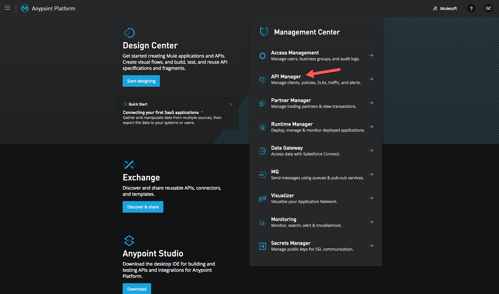 - Você também pode clicar no botão de navegação no canto superior esquerdo e, a seguir, no API Manager.

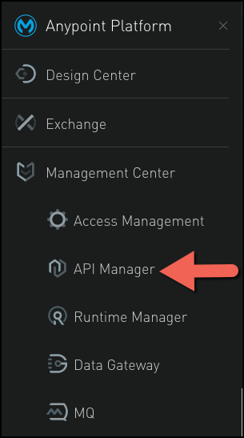 - selecione SANDBOX como o ambiente
Para este laboratório, vamos configurar a API como um proxy para a implementação simulada de API Omni Channel da Mythical Corporation. A API está disponível como uma API HTTP Restful acessível por meio do URL base http://workshop-omni-channel-mock-service-v40.cloudhub.io/api.
Para criar o proxy, vamos obter a definição de API do Exchange.
- Agora vamos configurar um gateway de proxy de API para esta API. De volta à página de API Administration, clique em Manage API e selecione Manage API from Exchange.
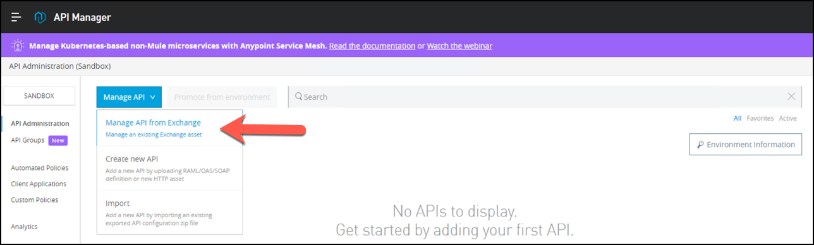 - Configure a API com as seguintes informações:
- API Name:
Omni Channel Experience API. Observe que quando você começa a escrever o nome, o campo é preenchido automaticamente. - Asset Type: Selecione na lista suspensa
RAML / OAS. - API version: selecione na lista suspensa
1.0.0. - Asset Version: Selecione na lista suspensa
1.0.0. - Managing type: Selecione
Endpoint com proxy. - Proxy deployment target: Escolha a
CoudHub - Mule Version: Marque a caixa. Vamos implantar um Gateway Mule .
- Implementation URI:
http://workshop-omni-channel-mock-service-v40.cloudhub.io/api - Path:
/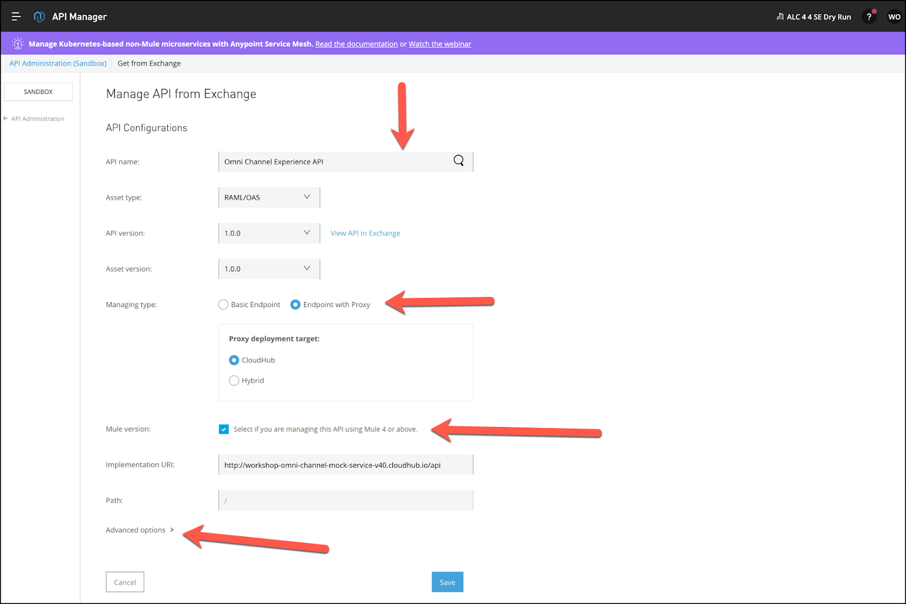
- Pressione Advanced options e configure:
- Rótulo da instância da API:
-proxy-omni-channel
- Pressione Save
Depois de pressionar Save, a seção de configuração de implantação aparecerá para implantar o proxy.
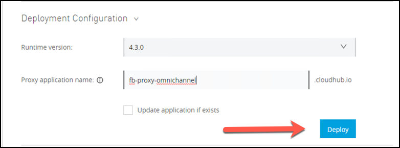 - Configure com as seguintes informações:
- Runtime version: Selecione
4.3.0 - Proxy application name:
-proxy-omni-channel
- Pressione o Deploy botão.
- Você deve ver o verde Implantação bem-sucedida na barra de status.
- Clique em Close.
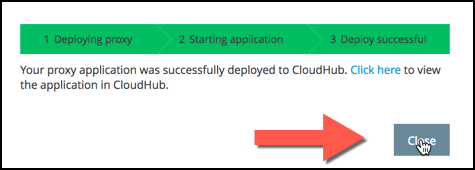 - Depois de implementado, na parte superior da página, você verá o status da API. Deve ser verde com uma bola verde ao lado, como mostrado abaixo. Isso indica que sua API foi implantada com sucesso e agora está sendo gerenciada.
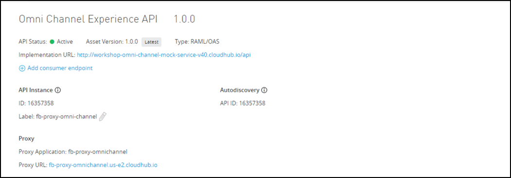
Para testar o gerenciamento de políticas, você adicionará uma política de limitação de taxa (rate limiting)à API.
- Vá para a página de administração da API Omni Channel.
- Clique na guia Policies nas definições de API.
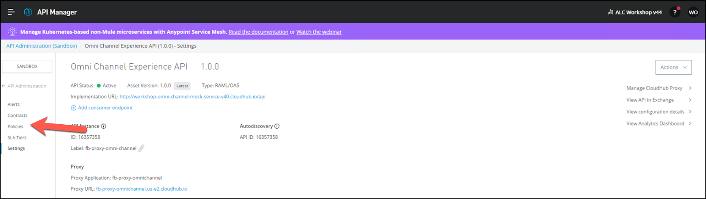 - Clique no Apply New Policy botão.
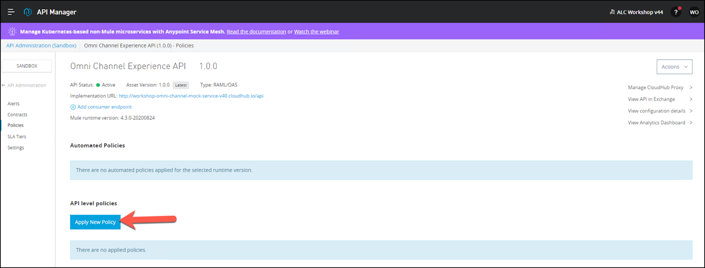 - Clique em Rate Limiting, selecione a versão e Configure Policy .
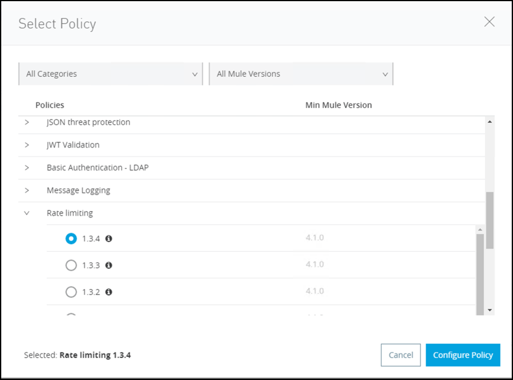 - Insira um máximo de solicitações de 3 por 1 minuto conforme mostrado e clique em Apply.
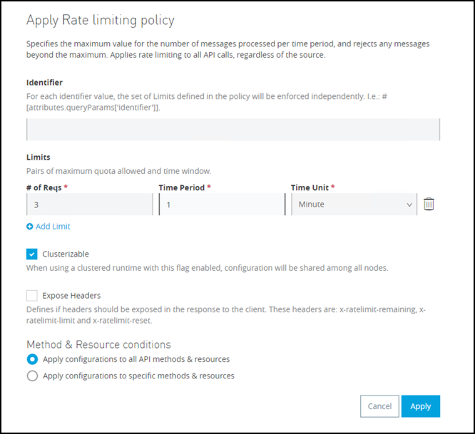
Você deve ver a política de limitação de taxa agora em Políticas aplicadas.
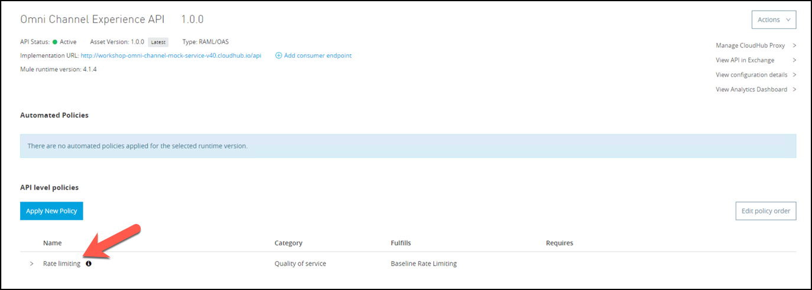 - Aguarde um minuto (o API Gateway recebe atualizações de política a cada 60 segundos, por padrão). Você também pode verificar se sua API recebeu a nova política olhando os registros. Procure na guia logs no Runtime Manager para sua aplicação. Procure mensagens de log semelhantes às seguintes com.mulesoft.module.policies.:
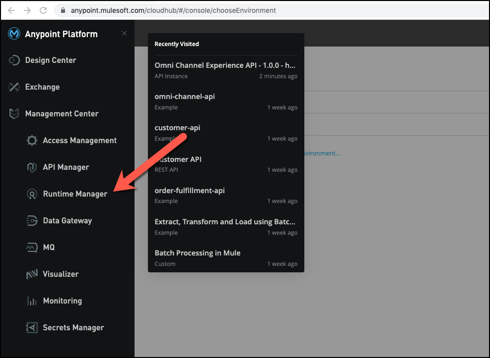
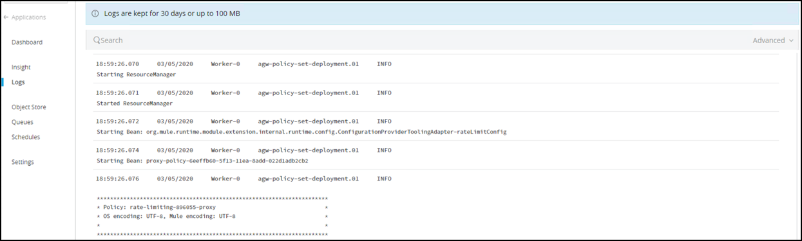 - Teste a API usando Postman ou qualquer outra ferramenta de teste de API e acesse seu URL de proxy adicionando / products / search no final (por exemplo, http: // <username> -proxy-omni-channel.us-e2.cloudhub.io/products / search).
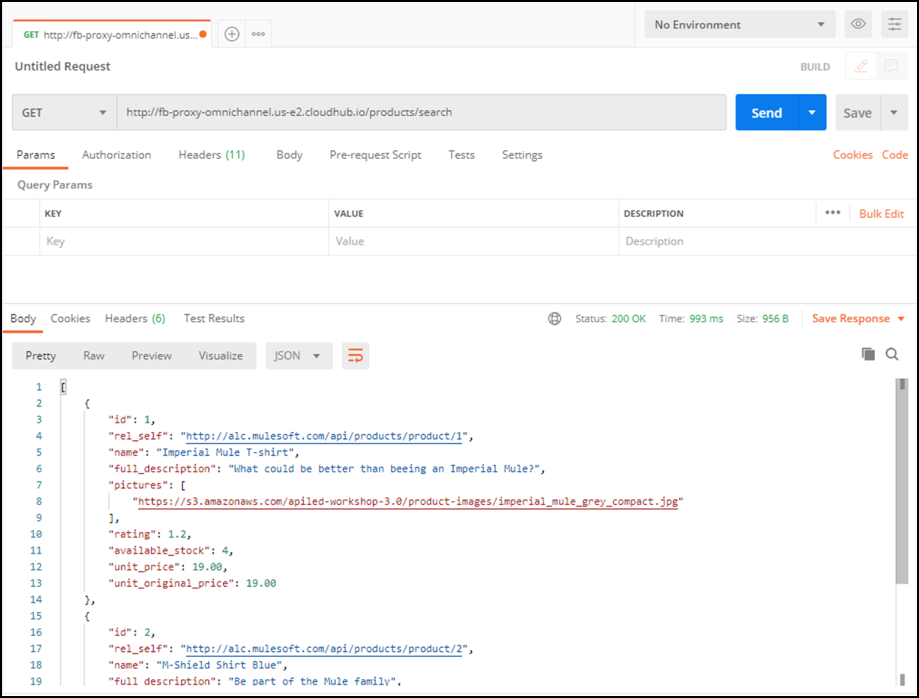 - Teste-o novamente pressionando o Send botão 3 vezes.
- Na terceira chamada, você receberá uma mensagem de erro indicando que a cota foi excedida. Isso demonstra que sua política de limitação de taxa foi aplicada.
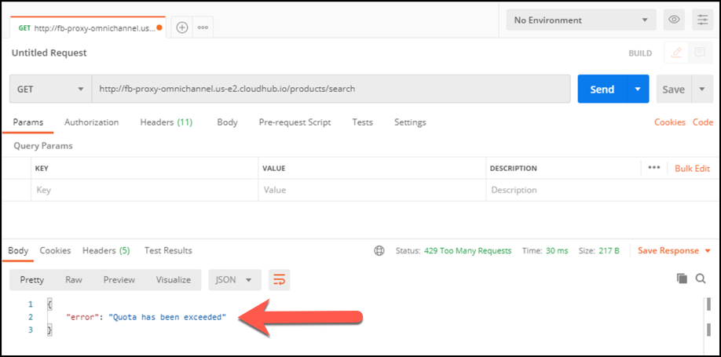